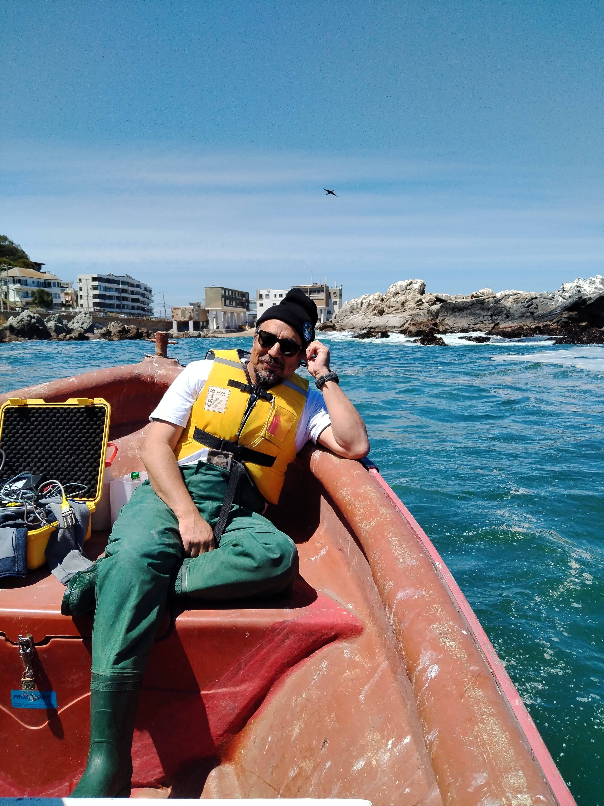

Oceanógrafo Físico | Investigador | Docente

Soy Oceanógrafo Físico y Doctor en Oceanografía, especializado en la dinámica de estuarios, fiordos y oceanografía costera. Mi trabajo se centra en comprender cómo los procesos físicos interactúan con los ecosistemas marinos, especialmente en la Patagonia chilena.
Actualmente me desempeño como Profesor Adjunto e Investigador en la Universidad de Valparaíso, donde dirijo el Laboratorio de Oceanografía Física y Satelital (LOFISAT- UV).
Liderando el proyecto Anillo ATE 220033, una investigación pionera que utiliza elefantes marinos como sensores bio-oceanográficos para medir cambios en las aguas costeras del sur de Chile y Tierra del Fuego.
Esta colaboración internacional permite obtener datos en áreas de difícil acceso, transformando a los animales en recolectores de información vital sobre el océano austral.
Ver Proyecto SEALSParticipación en la Expedición Científica Antártica (ECA) estudiando cómo el forzamiento ambiental afecta los rasgos de vida temprana de los peces antárticos en un océano en calentamiento.
Trabajo de campo en condiciones extremas para recolectar datos oceanográficos vitales para entender el futuro de los ecosistemas polares.
Ver INACHParticipación en la prestigiosa expedición del Schmidt Ocean Institute explorando y mapeando cañones submarinos y fuentes hidrotermales en el margen continental de Chile.
Uso de tecnología de punta como el ROV SuBastian para estudiar la biodiversidad de nuestros fondos marinos.
Ver ExpediciónEstudio en Tierra del Fuego utilizando elefantes marinos como sensores bio-oceanográficos para monitorear condiciones extremas.
ANILLO ATE220044Estudios sobre la morfología del mesozooplancton y respuesta de peces antárticos al calentamiento global.
INACH / CONAExploración de cañones submarinos y fuentes hidrotermales en el margen continental de Chile con el Schmidt Ocean Institute.
Schmidt Ocean InstituteInvestigación sobre la circulación y mezcla en fiordos de la Patagonia, analizando efectos del viento y mareas.
FONDECYTUso de datos satelitales para monitorear temperaturas superficiales y clorofila en zonas costeras.
LOFISAT-UVEvaluación de riesgos ambientales en zonas costeras a través del centro COSTA-R UV.
COSTA-REfectos del Cambio Climático en ambientes costeros y su impacto en la dinámica bio-física.
Global ChangeConsultoría especializada en oceanografía aplicada y servicios técnicos.
Consultoría técnica para sector público y privado en dinámica de sistemas costeros, estuarios y fiordos.
Evaluación de riesgos ambientales y diseño de campañas de monitoreo oceanográfico de alta resolución.
Aplicación de sensores remotos para la vigilancia y análisis de procesos bio-físicos en el mar chileno.
Capacitaciones especializadas en teoría y análisis de datos geofísicos aplicados al océano.
Compartiendo el conocimiento del océano con la comunidad.
Explora contenido sobre riesgos ambientales, monitoreo costero y ciencia ciudadana en nuestro canal oficial.
Ver CanalEscucha nuestras conversaciones sobre la dinámica del océano y la importancia de su conservación.
Escuchar PodcastExplorando el océano desde la Antártica hasta el desierto de Atacama.
Actividades y novedades del LOFISAT-UV
Sigue las actividades diarias, lanzamientos de instrumentos y expediciones en tiempo real a través de nuestro perfil oficial.
Seguir @lofi_sat